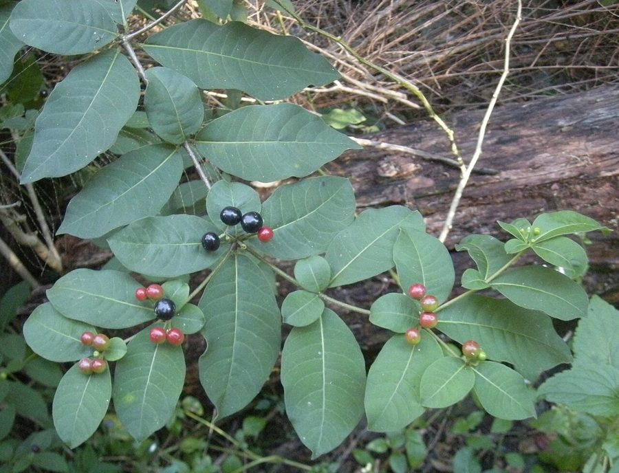

बड़ी चंद्रिकाBe-still Tree
Rauvolfia tetraphylla · Apocynaceae · FLR-0253

- Scientific name वैज्ञानिक नाम
- Rauvolfia tetraphylla L.
- Family कुल
- Apocynaceae
- Hindi हिंदी
- बड़ी चंद्रिका
- Local names स्थानीय नाम
- badi chandrika, chandrika, be still tree, rauvolfia
- Status here यहाँ की स्थिति
- naturalized
- Movement आवागमन
- Resident, here all year
- Known from कहाँ दर्ज
- Others have published records from the wider Awadh–Purvanchal plain, none yet from Basti–Ayodhya अवध–पूर्वांचल से दूसरों के प्रकाशित अभिलेख, बस्ती–अयोध्या से अभी नहीं
- IUCN IUCN
- not evaluated
- Review समीक्षा
- audited and independently read
When to look कब देखें
Present all year. साल भर मौजूद।
Uses and possibilities उपयोग और संभावनाएँ
“Traditional medicine” means a documented traditional use, not a claim that it works. Nothing on this page is medical advice.
Drawn from the documented uses in the profile below, where each is labelled traditional, current or a research lead. All uses →
Tell it apart from इनसे अलग पहचानें
बड़ी चंद्रिका / Be-still Tree
Rauvolfia tetraphylla L. — Apocynaceae
बड़ी चंद्रिका (सर्पवल्ली, चंद्रिका, "शांत-रहने वाला पेड़") — एक सदाबहार झाड़ी या छोटा पेड़ जो पुराने बाग़ों और पवित्र वृक्षों के रूप में पूर्वी उत्तर प्रदेश के कुछ हिस्सों में पाया जाता है। यह हिंदुस्तान में मूलतः दक्षिण भारत से लाया गया था, लेकिन अब विभिन्न बागों और वन भंडार में उगता है। छोटे, गुलाबी या सफ़ेद फूल और काले गोल फल इसे पहचानना आसान बनाते हैं। आयुर्वेद और पारंपरिक चिकित्सा में इसे एक महत्वपूर्ण दवा माना जाता है, लेकिन इसमें बहुत शक्तिशाली क्षारीय यौगिक होते हैं जो गहरे प्रभाव डालते हैं। इसे "शांत रहने वाला" कहा जाता है क्योंकि पारंपरिक उपयोग में इसे मानसिक चिंता और बेचैनी कम करने के लिए माना जाता है।
Quick Identification त्वरित पहचान
| Feature | Description |
|---|---|
| Plant habit | Woody shrub or small tree, 1–3 m, evergreen, branching low |
| Leaves | Whorled (4 per whorl; hence "tetraphylla"), lanceolate to oblong, 8–15 cm, glossy green |
| Stems | Woody, green to brownish, smooth, with milky latex when broken |
| Flowers | Small (0.8–1.2 cm), pale pink or white, fragrant, in terminal or axillary cymes |
| Fruits | Small, round, fleshy berries, 1–1.5 cm, initially red-purple, turning black when ripe |
| Latex | White to yellowish, present in all tissues |
Field tip: Look in gardens and protected areas for an evergreen shrub with glossy leaves arranged in whorls of four. The small, fragrant, pale pink or white flowers are distinctive. The ripe black berries are also characteristic. Break a leaf and white latex will ooze out.
हिंदी — कैसे पहचानें: चमकदार पत्तियाँ चारों-चारों में, गुलाबी फूल, काली गोल फलियाँ, पुराने बाग़ों में।
Morphology आकारिकी
Biometrics:
| Measurement | Range |
|---|---|
| Plant height | 1–3 m |
| Leaf length | 8–15 cm |
| Leaf width | 2–4 cm |
| Flower diameter | 0.8–1.2 cm |
| Berry diameter | 1–1.5 cm |
Stems: Woody, smooth or slightly pubescent when young, green becoming brownish with age, with white to yellow latex visible in fresh cuts.
Leaves: Simple, opposite and decussate, or whorled (four per whorl, hence tetraphylla), lanceolate to oblong-lanceolate, apex acuminate, base attenuate, margins entire, glabrous and glossy above, lighter beneath.
Flowers: Small, pale pink, white, or lilac, fragrant, in terminal cymose inflorescences. Calyx five-lobed; corolla five-lobed, often with a darker center; stamens five, attached to the corolla.
Fruits: Fleshy, globose berries, each containing two large seeds, initially red or purple, becoming black when fully ripe. Seeds hard and oily, dispersed by birds.
हिंदी: पत्तियाँ चार-चार में, चमकदार हरी, छोटे गुलाबी फूल, काली गोल फलियाँ।
Behaviour & Ecology व्यवहार और पारिस्थितिकी
A slow-growing, evergreen woody plant tolerant of poor soils and partial shade. It is long-lived and establishes slowly but persists for many decades once established. The plant is drought-tolerant and semi-deciduous under stress. The fragrant flowers attract insects, particularly bees and small butterflies. Birds eat the ripe berries and disperse seeds, though seedling establishment is slow. The plant is cultivated in gardens and sacred groves and has become naturalized in warm, moist habitats.
हिंदी: धीरे-धीरे बढ़ता है, पुराना पौधा बहुत साल तक रहता है, सूखा सहन कर सकता है, पक्षी फल खाते हैं।
Life Cycle / Phenology जीवन चक्र
| Month / season | Event |
|---|---|
| April–July | Slow growth during hot season; some older leaves may drop |
| August–September | New growth flush with monsoon onset; flowering begins |
| September–November | Peak flowering; fruit set and early fruit development |
| November–February | Fruit maturation and ripening; berries darken from red to black |
| March onwards | Ripe fruits eaten by birds; seeds dispersed |
The plant is long-lived and woody; large specimens may be 50+ years old.
हिंदी: गर्मी में धीरे, बरसात में थोड़ा बेहतर, फूल सर्दी में, फल फरवरी तक काले हो जाते हैं।
Associated Species / Interactions संबंधित प्रजातियाँ
- Garden companions: often grown alongside Sadabahar and other medicinal plants in traditional gardens
- Fruit dispersers: birds including House Sparrow, Jungle Babbler consume the ripe berries
- Traditional medicine associations: used in complex Ayurvedic and Siddha formulations with Ashwagandha, Brahmi, and other plants
Pests and Diseases कीट और रोग
Rarely affected by serious pests or diseases; the latex toxins provide natural protection. Occasionally affected by leaf spotting fungi in very humid conditions.
Agricultural / Human Relevance कृषि प्रासंगिकता
Important note — Toxicity and safe use: Rauvolfia tetraphylla contains numerous alkaloids including reserpine and ajmaline, which are potent compounds affecting the cardiovascular and nervous systems. The plant should be used only under qualified medical supervision. This account is educational and not medical advice.
Ethnobotanical use (documented traditional knowledge; not medical advice). In classical Ayurvedic texts, Rauvolfia tetraphylla is listed as a plant for calming the mind and nervous system. It is used in traditional preparations for anxiety, high blood pressure, and as a sleeping aid. The Sanskrit name relates to its properties of inducing calmness ("rau" = rest, "volfia" = bringing). The plant is also used in Siddha medicine (South Indian traditional medicine) for similar purposes. However, the plant is powerful and potentially dangerous if used incorrectly or in overdose.
Cautions: The roots are the most potent and most toxic. The plant should never be used by pregnant women, people with depression, or those taking other cardiovascular medications. Modern science has identified reserpine, an alkaloid used in pharmaceutical hypertension management, in Rauvolfia species; this does not make the crude plant suitable for self-medication.
Today. Still cultivated in some traditional gardens in South India and occasionally in Ayurvedic herb gardens in the north. Modern pharmaceutical reserpine is synthesized rather than extracted from the plant. Most traditional supply comes from cultivated or wild-harvested plants; use is limited to trained practitioners.
Research direction. The alkaloids of Rauvolfia tetraphylla have been studied for cardiovascular effects in published research, though human clinical trials are limited.
हिंदी: आयुर्वेद में बहुत शक्तिशाली दवा है, लेकिन ख़तरनाक भी है। केवल योग्य वैद्य की देखरेख में ही इस्तेमाल करें। गर्भवती महिलाओं और अन्य दवा लेने वालों को यह नहीं देना चाहिए।
Expected Locally स्थानीय रूप से अपेक्षित
Not a field record. Written from published accounts for eastern Uttar Pradesh. No confirmed local sighting yet — if you have seen it, that is what the atlas needs.
अभी तक स्थानीय पुष्टि नहीं। यह विवरण प्रकाशित स्रोतों से है, किसी अवलोकन से नहीं।
GBIF holds published records from the wider Awadh–Purvanchal plain. To be expected in old gardens, sacred groves, and protected areas from August through February. Likely present in the region but not yet formally recorded.
Distribution वितरण
Global range: Native to tropical America; introduced into tropical Asia where it is now cultivated and locally naturalized.
In India: Widespread in gardens and cultivated areas, particularly in southern India; increasingly found in northern gardens.
In Uttar Pradesh: Planted in selected gardens and sacred groves; naturalization status unclear.
In Basti district / eastern UP: Likely present in old gardens and possibly in sacred groves, but not yet formally confirmed.
Research Questions शोध प्रश्न
Anyone can investigate these | कोई भी इन प्रश्नों की जाँच कर सकता है
- Where does Rauvolfia tetraphylla grow in your region, and is it wild or planted? / आपके इलाक़े में यह पौधा कहाँ पाया जाता है, जंगली है या लगाया गया? — Check old gardens, temples, and natural areas.
- Is it still used in any household remedy or traditional practice locally? / क्या कोई इसे अभी भी घर में या वैद्य के पास देखता है? — Ask in households and Ayurvedic clinics.
- How many berries does one plant produce, and what birds eat them? / एक पौधा कितनी फलियाँ देता है, कौन से पक्षी खाते हैं? — Mark a plant and count fruiting; observe birds.
- How long does it take for a seedling to reach flowering size? / एक पौधा फूल देने में कितने साल लगाता है? — Grow seedlings and track their development.
- Does the latex really cause dermatitis, and in what conditions? / क्या सचमुच दूध छूने से खुजली होती है? — Conduct careful tests with volunteers.
Similar Species मिलती-जुलती प्रजातियाँ
| Species | How to tell apart | हिंदी |
|---|---|---|
| Sadabahar (Catharanthus roseus) | Smaller plant, flowers larger and more colorful (pink/white with contrasting center), leaves opposite not whorled | छोटा पौधा, रंगीन फूल, पत्तियाँ आमने-सामने |
| Wrightia tinctoria | Leaves linear-lanceolate, much narrower; flowers white with yellow center | बहुत संकरी पत्तियाँ, अलग फूल |
Field rule: An evergreen shrub with glossy leaves arranged in whorls of four, small pale pink fragrant flowers, and shiny black berries is Rauvolfia tetraphylla.
Taxonomy & Classification वर्गीकरण
Original description. Described by Linnaeus in 1753 in Species Plantarum. Named after Leonhart Rauwolf, a 16th-century German botanist and physician. The epithet tetraphylla refers to the characteristic arrangement of four leaves per whorl.
Subspecies. Monotypic — no subspecies are currently recognised.
Family and order placement. Apocynaceae (the dogbane family), order Gentianales. A genus of about 20 species found in tropical regions, mainly in America and Africa.
Phylogenetic notes. Rauvolfia is well-established within Apocynaceae; its alkaloid-producing capability is unique among the family's genera and has been extensively studied.
IUCN status rationale. Not evaluated. Cultivated widely and not threatened. No conservation concern for the species itself; potential conservation concern for other plants if R. tetraphylla becomes invasive in certain habitats.
Photo Gallery फोटो गैलरी
Photos needed आवश्यक फोटो
- [ ] Whole plant in a garden, October (पूरा पौधा)
- [ ] Whorled leaves and pale pink flowers (पत्तियाँ और गुलाबी फूल)
- [ ] Ripe black berries (काली फलियाँ)
No photos yet — add field photos to media/species/be_still_tree/ and run node scripts/sync_photos.js.
References संदर्भ
- Linnaeus, C. (1753). Species Plantarum, ed. 2. Stockholm. [original description]
- Hooker, J.D. (1882). The Flora of British India, vol. 4. L. Reeve, London. (Rauvolfia)
- Duthie, J.F. (1903). Flora of the Upper Gangetic Plain and of the Adjacent Siwalik and Sub-Himalayan Tracts. Government Printing, Calcutta.
- Bhava Prakasha (translated Sharma & Das, 2010). Bhava Prakasha of Bhava Misra, vol. 1. Chowkhambha Sanskrit Series, Varanasi.
- Chopra, R.N., Nayar, S.L. & Chopra, I.C. (1956). Glossary of Indian Medicinal Plants. CSIR, New Delhi.
- GBIF Occurrence Data — Rauvolfia tetraphylla, India (2026).
Source file: species/flora/medicinal/be_still_tree.md